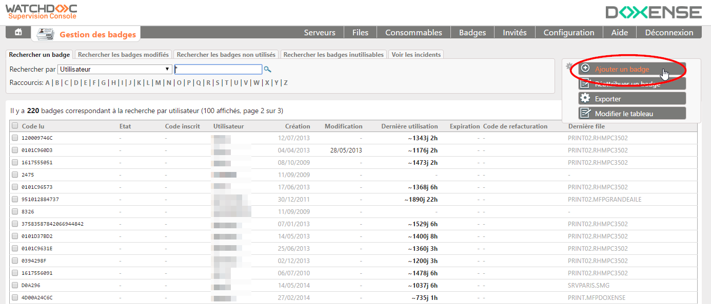
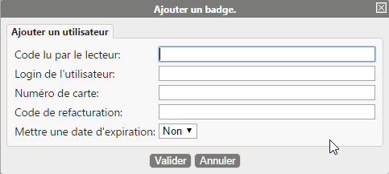
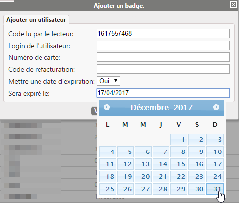
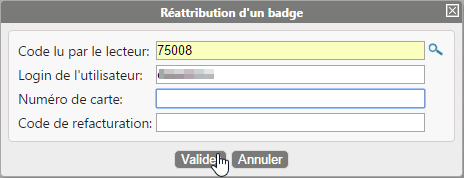
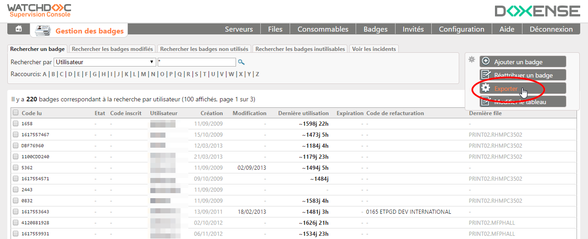
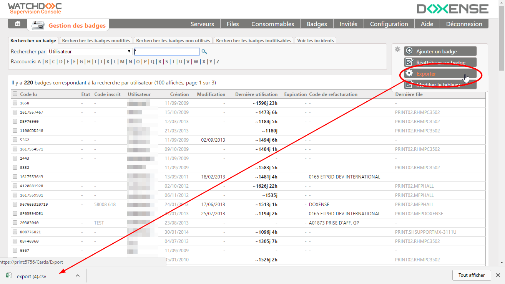

Ajouter un badge
Le bouton Ajouter un badge permet d'ajouter un badge manuellement. Outre cette méthode, il existe une méthode permettant aux utilisateurs d'associer eux-mêmes leur badge à leur compte (cf. Première utilisation avec un badge).
Pour ajouter un badge :
-
cliquez sur le bouton Ajouter un badge ;

-
Dans la boite Ajouter un badge, sélectionnez l'onglet correspondant au type de badge à créer :
-
Ajouter un utilisateur : si le propriétaire du badge est inscrit dans l'annuaire Active Directory ou tout autre annuaire déclaré dans Watchdoc ;
-
Ajouter un visiteur :si le propriétaire du badge n'est inscrit dans aucun annuaire de Watchdoc.

-
dans l'onglet Ajouter un utilisateur, complétez les champs suivants :
-
Code lu par le lecteur : (obligatoire) : indiquez le code inscrit sur le badge attribué à l'utilisateur et lu par le lecteur de badge. Vous pouvez enregistrer ce code automatiquement en présentant le badge à un lecteur connecté à votre poste de travail.
-
Login de l'utilisateur (obligatoire) : indiquez le compte du propriétaire du badge ;
-
Numéro de carte : si le badge dispose d'un identifiant, indiquez-le dans cette zone. Ce numéro peut servir à retrouver un badge en cas de perte, par exemple, ou pour gérer un stock de cartes.
-
Code de refacturation : indiquez un code de refacturation si nécessaire. Dans le cas où un code est déjà attribué au niveau du compte utilisateur dans l'annuaire LDAP, c'est le code attribué au badge qui prévaut.
-
Mettre une date d'expiration: si nécessaire, saisissez ici une date d'expiration. Au-delà de cette date, le badge ne fonctionnera plus.
-
cliquez sur le bouton Valider pour enregistrer le badge ;
-
réactualisez la page pour vérifier que le badge a bien été enregistré dans la base.

-
Réattribuer un badge
Si vous disposez d'un lecteur de badge connecté à votre ordinateur, vous pouvez réattribuer un badge très rapidement, grâce à la fonction dédiée :
-
dans la liste des badges, cliquez sur le bouton Réattribuer un badge ;
-
placez le curseur dans le champ de saisie et présentez votre badge au lecteur ;
-
Dans la boîte Réattribution d'un badge, remplissez les champs relatifs au nouveau propriétaire du badge :

-
cliquez sur le bouton Valider pour confirmer la réattribution du badge.
Exporter toute la liste des badges
Pour exporter la liste exhaustive des badges :
-
dans la liste cliquez sur le bouton ck on the Exporter :

-
enregistrez le fichier d'export téléchargé par votre navigateur dans votre environnement de travail afin de l'exploiter.
